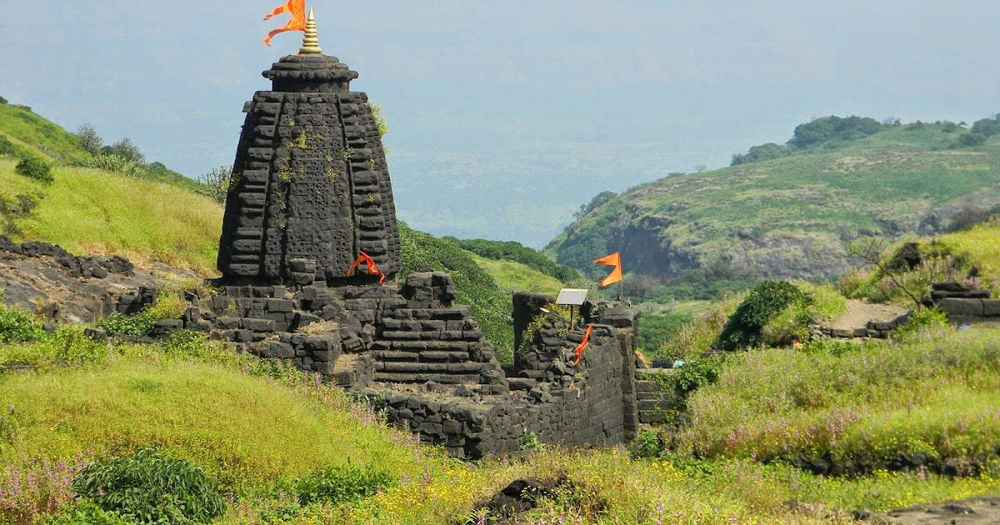

A guide to the challenging but rewarding trek to Harishchandragad, exploring the famous Konkan Kada cliff and ancient caves.
Conquering Sinhgad: A Local's Guide
Discover the history and beauty of Sinhgad fort, a perfect day trek near Pune with stunning views and delicious local food.
The Grandeur of Mewar Forts
An epic journey through the historic forts of the Mewar region, detailing the best routes and cultural significance.
Harishchandragad: The Konkan Kada Trek
The trek to Harishchandragad is an adventure of a lifetime, especially if you take the route to the famous Konkan Kada. This massive, semi-circular cliff hangs precariously over the valley, offering breathtaking panoramic views that are simply unforgettable. The trail takes you through dense forests and over rocky terrain, challenging you every step of the way.
Beyond the thrill of the trek, Harishchandragad is steeped in history. The fort itself dates back to the 6th century, with many of its caves and temples carved out in the 11th century. The Kedareshwar Cave, with its ancient Shiva Linga, is a must-visit spot that adds a spiritual element to the journey. Local stories tell of great sages who meditated here, their presence still felt in the peaceful atmosphere. It is said that there were four pillars around the Shiva Linga, representing the four 'yugas' or eras of life on Earth. Only one remains today, which local legend says will break at the end of the current 'Kali Yuga' to mark the world's end.

The sunrise from Taramati Peak is an experience you will not soon forget, with the golden light painting the sky and illuminating the Western Ghats. This trek is a true test of endurance and a beautiful way to connect with both nature and history.
Your Review or Suggestion
Conquering Sinhgad: A Local's Guide
Located southwest of Pune, Sinhgad fort is a beloved trekking destination for both locals and tourists. The trek is relatively short and easy, making it perfect for a morning or afternoon adventure. The path is well-worn, leading you up a winding trail with beautiful views of the surrounding hills. Once at the top, you'll find a lively fort with food stalls selling local delicacies like 'pithla-bhakri' and 'zunka-bhakar.'
The fort is rich with history, famously known for the 'Battle of Sinhagad' in 1670. It was here that Tanaji Malusare, a brave general of Chhatrapati Shivaji Maharaj, sacrificed his life to recapture the fort. It's said that upon hearing of his death, Shivaji Maharaj said, “Gad ala, pan Sinha gela,” which means, “The fort is captured, but the lion is lost.” It is from this legendary quote that the fort got its name, 'Sinhagad' (The Fort of the Lion). The memorials of Tanaji Malusare and Rajaram I stand as a testament to their bravery.
The panoramic view from the top is simply spectacular. You can see the Khadakwasla Dam and the cityscape of Pune from different points. It's a place where history and nature merge to provide a truly inspiring experience.
Your Review or Suggestion
The Grandeur of Mewar Forts
The forts of the Mewar region in Rajasthan are not just stone structures; they are living testaments to a glorious past filled with tales of courage, honor, and sacrifice. The most iconic of these is the Chittorgarh Fort, a UNESCO World Heritage Site and one of the largest forts in India. Sprawling over a massive hill, it is a magnificent symbol of Rajput pride.
The fort's history is full of dramatic stories, including three major sieges where the Rajput women committed 'Jauhar' (mass self-immolation) to protect their honor. The Vijay Stambh (Tower of Victory) and Kirti Stambh (Tower of Fame) stand tall, their intricate carvings narrating the triumphs of the past. Walking through the palaces of Queen Padmini and Rana Kumbha, you can feel the echoes of a bygone era.
Another gem is the Kumbhalgarh Fort, known for having the second-longest continuous wall after the Great Wall of China. The sheer scale and strategic design of these forts are awe-inspiring. A trek through the Mewar forts is a journey into the heart of Indian history and a profound experience for any traveler.


.webp)